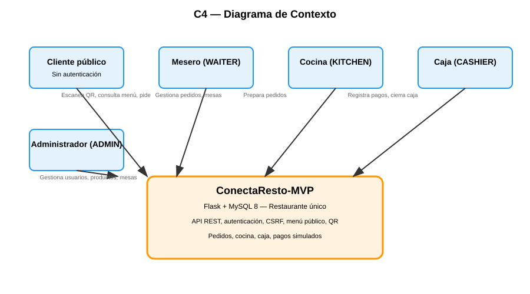
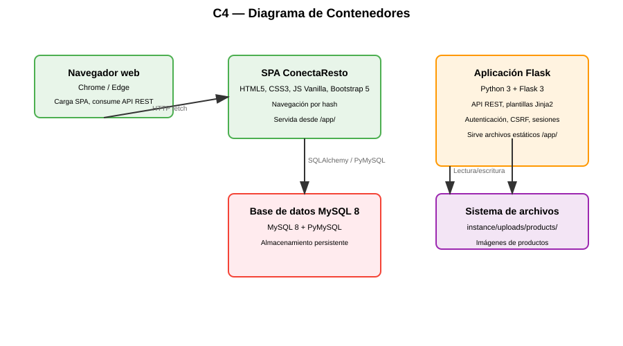
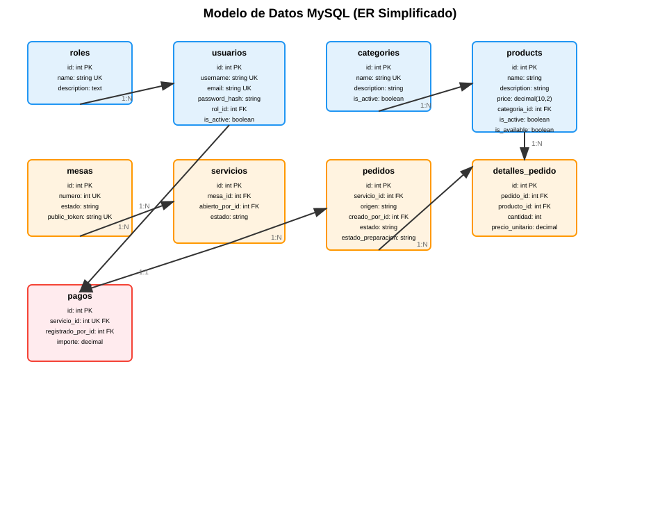
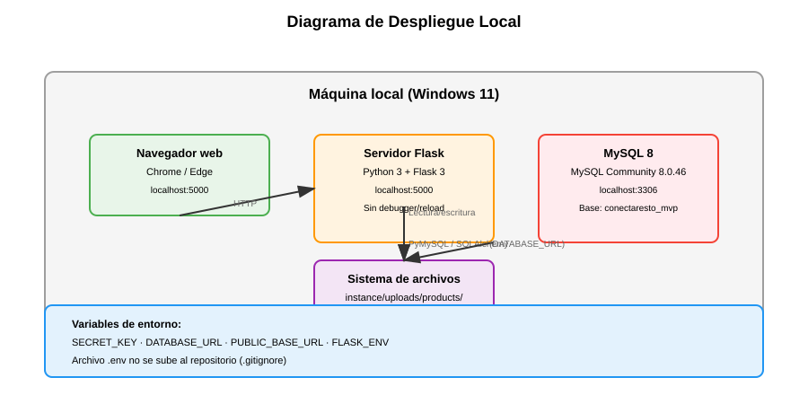

C4 de Contexto — Actores y sistema

C4 de Contenedores — Componentes del sistema

C4 de Componentes — Arquitectura de componentes
Equipo de desarrollo:
Evidencia verificada: PLAN_DE_TRABAJO_MVP.md.
ConectaResto-MVP es una aplicación académica de gestión de restaurantes para un único establecimiento, desarrollada con Python, Flask, MySQL 8 y HTML/CSS/JavaScript Vanilla. Permite gestionar mesas y productos, recibir pedidos mediante QR, autorizarlos, prepararlos y registrar pagos simulados.
El proyecto nace como una aplicación académica independiente. Toda la implementación parte de cero bajo el stack definido en PLAN_DE_TRABAJO_MVP.md. El restaurante opera con una única sucursal y necesita gestionar mesas, productos, pedidos, cocina y caja mediante una aplicación web.
El objetivo es desarrollar un MVP de gestión de restaurantes para un único establecimiento, permitiendo a los clientes consultar el menú y realizar pedidos mediante QR, y al personal interno gestionar mesas, pedidos, cocina y caja.
| Rol | Responsabilidades principales |
|---|---|
| ADMIN | CRUD de usuarios, productos, categorías, mesas; dashboard resumen. |
| WAITER (mesero) | Ver mesas, crear/autorizar/entregar pedidos, enviar a cocina. |
| KITCHEN (cocina) | Ver pedidos en preparación, cambiar estados de preparación. |
| CASHIER (caja) | Ver pedidos listos para cobrar, registrar pagos simulados, cerrar servicios. |
| Cliente público | Consultar menú y crear pedidos mediante QR sin autenticación. |
login_required y roles_required.Evidencia verificada: PLAN_DE_TRABAJO_MVP.md (secciones de alcance, roles, reglas de negocio, funcionalidades excluidas y decisiones pendientes).
with_for_update(), transacciones atómicas, precios serializados como cadena para preservar precisión Decimal.Según PLAN_DE_TRABAJO_MVP.md §9, los siguientes puntos requieren confirmación explícita del usuario antes de implementarse:
El proyecto lo desarrollan dos integrantes:
El seguimiento de tareas se realiza mediante Jira. El control de versiones se gestiona con Git y GitHub. La integración de cambios se realiza mediante ramas independientes y Pull Requests sobre la rama main.
La aplicación sigue el patrón factory create_app() con instancia db a nivel de módulo y migraciones mediante Flask-Migrate.
app/__init__.py)development, testing, production).SQLAlchemy y Flask-Migrate.health, frontend, auth, mesas, public_mesas, users, categories, products, servicios, pedidos.app/config.py)SESSION_COOKIE_HTTPONLY = TrueSESSION_COOKIE_SAMESITE = "Lax"SESSION_REFRESH_EACH_REQUEST = FalsePERMANENT_SESSION_LIFETIME = timedelta(hours=8)SECRET_KEY desde variable de entorno.SQLALCHEMY_DATABASE_URI desde DATABASE_URL.SQLALCHEMY_ENGINE_OPTIONS: pool_pre_ping = True, pool_recycle = 3600TestingConfig: usa SQLite en memoria por defectoProductionConfig: SESSION_COOKIE_SECURE = True y exige SECRET_KEY segura| Capa | Componentes | Responsabilidad |
|---|---|---|
| Presentación | Blueprints Flask, plantillas Jinja2, SPA (HTML/CSS/JS Vanilla + Bootstrap) | Interfaz de usuario y consumo de API REST |
| API REST | Endpoints Flask (auth, users, catalog, mesas, servicios, pedidos) | Contratos HTTP con métodos, roles y códigos de respuesta |
| Aplicación (Services) | auth.service, users.service, catalog.service, servicios.service, pedidos.service | Lógica de negocio por dominio |
| Acceso a datos (Repositorios) | PedidoRepository, ServicioRepository | Consultas SQLAlchemy, bloqueo de fila |
| Transferencia (DTO) | PedidoDTO, ServicioDTO | Serialización de respuestas JSON |
| Dominio (Modelos y reglas) | Modelos SQLAlchemy, reglas de negocio, validaciones de dominio | Entidades, estados, transiciones, restricciones |
| Datos | MySQL 8, Flask-Migrate (migraciones 001-014) | Almacenamiento persistente |
| Diagrama | Contenido | Visualización |
|---|---|---|
| C4 de Contexto | Actores (cliente público, mesero, cocina, caja, administrador) y sistema ConectaResto-MVP |
 C4 de Contexto — Actores y sistema
|
| C4 de Contenedores | Navegador, SPA, Flask, MySQL 8, sistema de archivos |
 C4 de Contenedores — Componentes del sistema
|
| C4 de Componentes | Blueprints, repositorios, DTO, modelos, extensiones, configuración |
C4 de Componentes — Arquitectura de componentes
|
| Diagrama | Contenido | Visualización |
|---|---|---|
| Clases / Entidades del dominio | Roles, usuarios, categorías, productos, mesas, servicios, pedidos, detalles de pedido, pagos |

Diagrama de clases / entidades del dominio
|
| Arquitectura por capas | Capas de presentación, API, aplicación, repositorios, DTO, dominio y datos |

Arquitectura modular por capas
|
| Modelo de datos MySQL (ER) | 10 tablas, relaciones, restricciones CHECK y únicas |
 Modelo lógico y físico de MySQL
|
| Despliegue local | Navegador, servidor Flask, MySQL 8, sistema de archivos |
 Diagrama de despliegue local
|
| ADR | Decisión | Estado |
|---|---|---|
| ADR-1 | Flask como framework backend. | Histórico — vigente según código actual |
| ADR-2 | MySQL como base relacional. | Histórico — vigente según código actual |
| ADR-3 | Arquitectura monolítica modular. | Histórico — vigente según código actual |
| ADR-4 | Frontend HTML/CSS/JS vanilla con plantillas Jinja2. | Histórico — actualizado con SPA de HTML5, CSS3, JS vanilla, Bootstrap 5, navegación por hash, servida desde /app/ |
| ADR-5 | Ejecución local sin despliegue en producción. | Histórico — vigente según alcance del MVP |
with_for_update(), transacciones atómicas.pool_pre_ping y pool_recycle, precios serializados como cadena para preservar precisión Decimal.GET /health, sesiones con expiración absoluta de 8 horas.Evidencia verificada: requirements.txt, código fuente en app/.
| Componente | Tecnología | Versión mínima |
|---|---|---|
| Backend | Flask (Python) | >=3.0.0 |
| Lenguaje backend | Python | — |
| Frontend | HTML, CSS, JavaScript Vanilla | — |
| Base de datos | MySQL 8 | — |
| ORM / migraciones | SQLAlchemy, Flask-Migrate | >=3.0.0 / >=4.0.0 |
| Pruebas | Pytest | >=8.0.0 |
| Driver MySQL | PyMySQL | >=1.1.0 |
| Variables de entorno | python-dotenv | >=1.0.0 |
| Generación QR | segno | >=1.4.0 |
El archivo .env está en .gitignore y no se sube al repositorio. Las variables sensibles (URI de MySQL, SECRET_KEY, PUBLIC_BASE_URL) se configuran mediante variables de entorno.
La factory create_app() en app/__init__.py crea la instancia Flask, carga la configuración por entorno, inicializa SQLAlchemy y Flask-Migrate, registra manejadores globales de errores y registra los blueprints de cada dominio.
Las pruebas se ejecutan con python -m pytest -q. El entorno de pruebas usa TEST_DATABASE_URL=sqlite:///:memory: para aislar MySQL.
Evidencia verificada: README.md §8 (recorrido rápido de demostración), docs/ESTADO_CIERRE_MVP.md §Bloque 3 (veredicto LISTO), docs/QR_PUBLICO.md, docs/E3_MENU_PUBLICO.md, código fuente de rutas y servicios.
El flujo principal del MVP, según la consigna de entrega (21 nov 2026):
GET /admin/mesas/<id>/qr.svg) que apunta a la SPA (/app/?token=TOKEN#public). El QR se genera localmente con segno.POST /public/mesas/<token>/pedidos con CSRF). El backend reutiliza un servicio ACTIVO o abre uno automáticamente para una mesa DISPONIBLE.POST /pedidos/<id>/autorizar).POST /pedidos/<id>/enviar-cocina → estado EN_PREPARACION, preparación RECIBIDO). KITCHEN cambia a EN_COCINA y luego LISTO_PARA_SERVIR (PATCH /pedidos/<id>/preparacion → pedido LISTO).POST /pedidos/<id>/entregar).POST /servicios/<id>/pago-simulado).POST /servicios/<id>/cerrar), la mesa vuelve a DISPONIBLE.is_available = true) para agregarse a un pedido.Las operaciones de pedido y caja utilizan bloqueo de fila (with_for_update()) en MySQL para serializar accesos concurrentes. La función bloquear_servicio() bloquea la mesa y el servicio antes de leer, y el commit/rollback es atómico.
Evidencia verificada: app/models/*.py, migraciones migrations/versions/001 a 014 (HEAD: 014_add_image_filename_to_products), app/catalog/CONTRACT.md §Modelo.
El esquema físico se gestiona mediante 14 migraciones versionadas de Flask-Migrate. Todas las tablas heredan de BaseModel con columnas id (PK), created_at y updated_at.
| Tabla | Columnas principales | Relaciones / restricciones |
|---|---|---|
roles | id, name (unique), description | Roles: ADMIN, WAITER, KITCHEN, CASHIER. |
usuarios | id, username (unique), email (unique), password_hash, rol_id FK, is_active | FK a roles.id. Un usuario tiene un rol. |
categories | id, name (unique, collation utf8mb4_0900_ai_ci), description, is_active | Nombre único sin distinguir mayúsculas/acentos. |
products | id, name, description, price NUMERIC(10,2), categoria_id FK, is_active, is_available, image_filename | FK a categories.id. Nombre único por categoría. Precio como Decimal serializado como cadena. |
mesas | id, numero (unique, >0), estado (DISPONIBLE/OCUPADA/CERRADA), public_token (unique, 64 hex) | Token público estable entre servicios para menú QR. |
servicios | id, mesa_id FK, abierto_por_id FK nullable, estado (ACTIVO/CERRADO), columna generada estado_activo | Índice único parcial uq_servicios_una_activa_por_mesa (solo un ACTIVO por mesa). FK a mesas.id y usuarios.id. |
pedidos | id, servicio_id FK, origen (MESERO/PUBLICO), creado_por_id FK, autorizado_por_id FK, autorizado_at, estado, estado_preparacion | FK a servicios.id y usuarios.id. Check constraints en estados y origen. |
detalles_pedido | id, pedido_id FK, producto_id FK, cantidad, precio_unitario NUMERIC(10,2) | FK a pedidos.id y products.id. Precio capturado al crear el pedido. |
pagos | id, servicio_id (unique) FK, registrado_por_id FK, importe NUMERIC(10,2) (>0), fecha_registro | FK a servicios.id y usuarios.id. Un pago por servicio. |
| Acción | Estado del pedido | Estado de preparación | Rol |
|---|---|---|---|
| Crear | PENDIENTE | NO_ENVIADO | WAITER / Público |
| Autorizar | PENDIENTE | NO_ENVIADO | WAITER |
| Enviar a cocina | EN_PREPARACION | RECIBIDO | WAITER |
| Cocina comienza | EN_PREPARACION | EN_COCINA | KITCHEN |
| Cocina termina | LISTO | LISTO_PARA_SERVIR | KITCHEN |
| Mesero entrega | ENTREGADO | LISTO_PARA_SERVIR | WAITER |
Evidencia verificada: app/pedidos/CONTRACT.md, app/catalog/CONTRACT.md, docs/ESTADO_CIERRE_MVP.md (tabla de rutas contrastadas), código fuente de rutas.
| Método | Ruta | Rol | Descripción |
|---|---|---|---|
| GET | /health | Público | Health check (HTTP 200). |
| GET | /auth/csrf | Público | Obtiene token CSRF. |
| POST | /auth/login | Público | Inicia sesión (username/password). |
| POST | /auth/logout | Autenticado | Cierra sesión. |
| GET | /auth/me | Autenticado | Usuario actual. |
| GET | /users | ADMIN | Lista usuarios. |
| GET | /users/<id> | ADMIN | Consulta usuario. |
| POST | /users | ADMIN | Crea usuario. |
| PATCH | /users/<id> | ADMIN | Actualiza/reactiva usuario. |
| DELETE | /users/<id> | ADMIN | Desactiva usuario lógicamente. |
| GET | /categories | Público | Lista categorías activas. |
| POST | /categories | ADMIN | Crea categoría. |
| GET | /categories/<id> | Público | Consulta categoría activa. |
| PATCH | /categories/<id> | ADMIN | Actualiza/reactiva categoría. |
| DELETE | /categories/<id> | ADMIN | Desactiva categoría lógicamente. |
| GET | /products | Público | Lista productos disponibles (filtro ?categoria_id). |
| GET | /admin/products | ADMIN | Lista productos (incluye no disponibles). |
| POST | /products | ADMIN | Crea producto. |
| GET | /products/<id> | Público | Consulta producto disponible. |
| PATCH | /products/<id> | ADMIN | Actualiza producto. |
| DELETE | /products/<id> | ADMIN | Desactiva producto lógicamente. |
| PUT/DELETE | /products/<id>/image | ADMIN | Sube/elimina imagen de producto. |
| GET | /products/<id>/image | Público | Sirve imagen de producto. |
| GET | /mesas | WAITER | Lista mesas con filtros. |
| GET | /admin/mesas | ADMIN | Lista mesas con token público. |
| POST | /admin/mesas | ADMIN | Crea mesa. |
| GET/PATCH | /admin/mesas/<id> | ADMIN | Consulta/actualiza mesa. |
| GET | /admin/mesas/<id>/qr.svg | ADMIN | Genera QR SVG de la mesa. |
| GET | /public/mesas/<token> | Público | JSON con número y enlaces al menú. |
| GET | /public/mesas/<token>/menu | Público | Menú público por categorías. |
| POST | /public/mesas/<token>/pedidos | Público + CSRF | Crea pedido público (apertura automática si es necesario). |
| POST | /servicios | WAITER | Abre servicio para una mesa. |
| GET | /servicios | WAITER, CASHIER | Lista servicios (filtro ?estado=ACTIVO/CERRADO). |
| GET | /servicios/<id> | WAITER, CASHIER | Consulta servicio con pedidos, total y pago. |
| POST | /servicios/<id>/pago-simulado | CASHIER | Registra pago simulado. |
| POST | /servicios/<id>/cerrar | CASHIER | Cierra servicio y libera mesa. |
| POST | /servicios/<id>/pedidos | WAITER | Crea pedido interno. |
| GET | /pedidos | WAITER, KITCHEN | Lista pedidos (filtro ?estado). |
| GET | /pedidos/<id> | WAITER, KITCHEN | Consulta pedido con detalles y precios históricos. |
| POST | /pedidos/<id>/autorizar | WAITER | Autoriza pedido pendiente. |
| POST | /pedidos/<id>/enviar-cocina | WAITER | Envía a cocina (estado EN_PREPARACION). |
| PATCH | /pedidos/<id>/preparacion | KITCHEN | Actualiza estado de preparación. |
| POST | /pedidos/<id>/entregar | WAITER | Marca pedido como entregado. |
Formato de respuesta JSON: {"success": true, "data": ..., "message": ...} para éxito; {"success": false, "error": ..., "errors": ...} para error. Los precios se serializan como cadena con dos decimales para preservar precisión Decimal.
Evidencia verificada: app/auth/routes.py, app/auth/service.py, app/auth/decorators.py, app/auth/csrf.py, app/config.py, app/models/usuario.py.
POST /auth/login con username y password.generate_password_hash / check_password_hash).session["user_id"] y session["authenticated_at"].PERMANENT_SESSION_LIFETIME).SESSION_REFRESH_EACH_REQUEST = False (la sesión no se renueva en cada petición).login_required: devuelve 401 si no hay sesión.roles_required(*roles): combina login_required y verifica que el rol del usuario esté en la lista permitida (403 si no coincide).secrets.token_hex(32)) y obtenido mediante GET /auth/csrf.protect_csrf aplicado en before_request; exige encabezado X-CSRF-Token en métodos no seguros (POST, PATCH, PUT, DELETE).CSRF_EXEMPT_ENDPOINTS = frozenset()): ninguna ruta está exenta.hmac.compare_digest.
| Ejecución | Resultado | Entorno | Tipo de prueba |
|---|---|---|---|
| Suite completa pytest | 692 aprobadas, 0 fallidas, 1 omitida | SQLite | pytest (automatizada) |
| Esquema MySQL 8.0.46 y 14 migraciones | Verificadas por separado | MySQL 8.0.46 | API (automatizada) |
| Cuatro paneles Chrome con sesiones independientes (ADMIN, WAITER, KITCHEN, CASHIER) | APROBADOS (abertura QR en SPA, menú visible) | Chrome + MySQL 8.0.46 | Visual (manual) |
| Flujo completo QR → pedido → mesero → cocina → caja → cierre | APROBADO mediante API | MySQL 8.0.46 + API REST | API (automatizada) |
| Completar pedido mediante botones de la SPA | APROBADO (confirmación manual del usuario) | Chrome + SPA | Visual (manual) |
| Corrección de login | PR #56 aplicado | MySQL 8.0.46 | API (automatizada) |
No se presentan pruebas API como pruebas visuales. Las 692 pruebas pytest fueron ejecutadas contra SQLite; MySQL 8.0.46 y las 14 migraciones se verificaron por separado. Las pruebas visuales por rol y la confirmación del recorrido completo son evidencias manuales del usuario, no pruebas automatizadas.